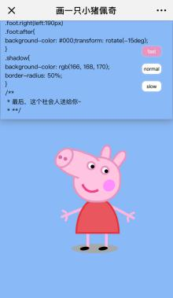
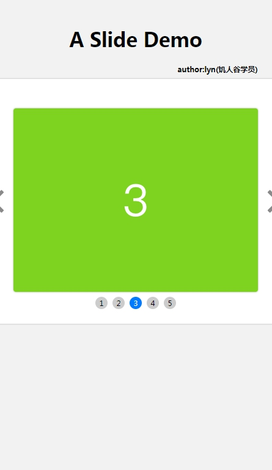
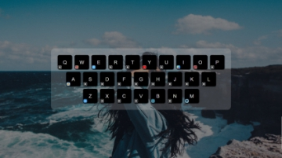
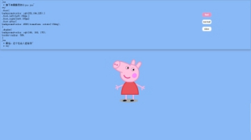
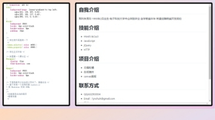

L
yn
关于
技能
作品
css实现卡通人物
导航demo
画板demo
轮播demo
留言
博客
博客
简书
知乎
朱秀玲
一个踏入社会快满一年的大龄毕业生，在开始工作的第二个月，发现自己对前端产生了兴趣，却苦于没有一身技术。于是开始了半年的边做文案策划边学习前端的日子
年龄
25
所在城市
广东珠三角
学历
本科 / 电子科学与技术
工作年限
1年
QQ/Wechat
632955934
Github
https://github.com/lynchuh
下载 PDF 简历
技能
HTML 5 & CSS 3
熟悉常见布局、盒模型、Flex、响应式、移动端适配，
掌握CSS 3 动画、过渡效果、响应式等常用技术。
可快速根据设计稿开发页面，熟悉开发调试，
搭建符合 HTML5 语义化的页面结构。
Link: 点我即可拥有这只小猪佩奇

JavaScript & jQuery
熟悉原生JS和jQuery，能脱离jQuery等类库编码，
掌握事件模型、DOM 操作、闭包、 原型链、面向对象、MVC等知识
熟悉AJAX、JSONP、跨域等,
了解ES6语法、继承、类、Promise等
Link:点我查看无缝轮播
Link:点我查看一个会动的简历
Link:点我查看我的导航页面

框架 & 工具
了解前端自动化工具Webpack，Parcel，
会使用Git进行版本管理、Linux命令行等开发工具。
了解 Vue、React 前端框架，可独立开发页面组件。
了解HTTP通信原理及Node.js、可独立搭建后端服务器
作品集
小画板
关键字
原生JavaScript、jQuery、响应式、 MVC、canvas
描述
使用原生JS及jQuery进行DOM操作与事件委托;
并用MVC思想重构代码；使用canvasAPI 实现涂鸦功能；
并使用meta进行移动端适配。项目实现涂鸦调色、橡皮擦、保存、一键删除等功能。
预览链接
https://lynchuh.github.io/canvas-demo/index.html
源码链接
https://github.com/lynchuh/canvas-demo

我de导航页
关键字
jQuery
描述
jQuery进行DOM操作与事件委托;
使用mark.js实现演示代码的高亮，prism.js实现markdown格式转换为html
预览链接
https://lynchuh.github.io/canvas-demo/index.html
源码链接
https://github.com/lynchuh/canvas-demo

CSS 3实现动画人物
关键字
原生JavaScript、jQuery、响应式、 MVC、canvas
描述
使用原生JS及jQuery进行DOM操作与事件委托;
并用MVC思想重构代码；使用canvasAPI 实现涂鸦功能；
并使用meta进行移动端适配。项目实现涂鸦调色、橡皮擦、保存、一键删除等功能。
预览链接
https://lynchuh.github.io/canvas-demo/index.html
源码链接
https://github.com/lynchuh/canvas-demo

一个会动的简历
关键字
原生JavaScript、jQuery、响应式、 MVC、canvas
描述
使用原生JS及jQuery进行DOM操作与事件委托;
并用MVC思想重构代码；使用canvasAPI 实现涂鸦功能；
并使用meta进行移动端适配。项目实现涂鸦调色、橡皮擦、保存、一键删除等功能。
预览链接
https://lynchuh.github.io/canvas-demo/index.html
源码链接
https://github.com/lynchuh/canvas-demo
留言
姓名：
留言：